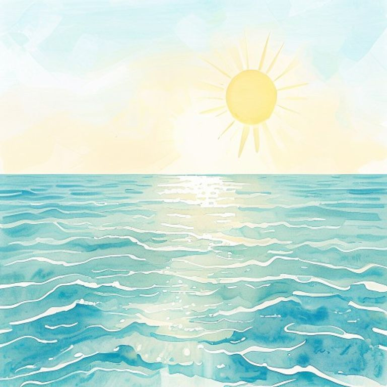
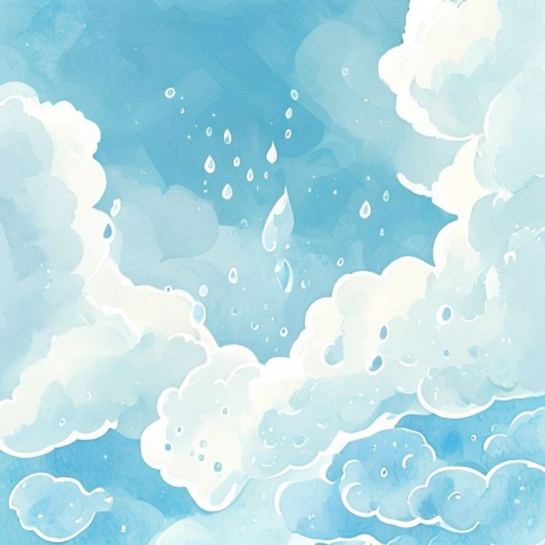
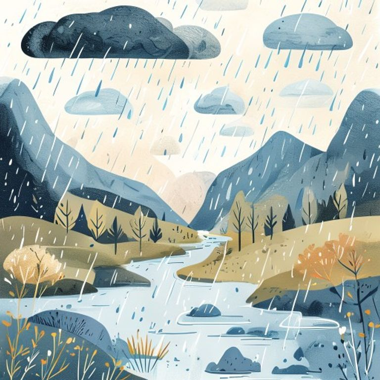

Bright sun warming the ocean, showing water vapor gently rising from the surface towards the sky. Clear blue sky.. Style: educational illustration in the style of a modern Catalan children's textbook, warm pastel watercolor palette with cream and soft blue tones, gentle hand-drawn look, consistent storybook style, visible main subject with high contrast against a soft colored background (never pure white on white), friendly rounded shapes, no text, no letters, no labels, age-appropriate for 8-10 year olds, high pedagogical clarity
 flux_schnell_pollinations |
Water vapor in the sky transforming into small droplets, forming distinct white clouds against a blue background. A sense of cooling.. Style: educational illustration in the style of a modern Catalan children's textbook, warm pastel watercolor palette with cream and soft blue tones, gentle hand-drawn look, consistent storybook style, visible main subject with high contrast against a soft colored background (never pure white on white), friendly rounded shapes, no text, no letters, no labels, age-appropriate for 8-10 year olds, high pedagogical clarity
 flux_schnell_pollinations |
Dark clouds releasing rain and snow over a landscape with mountains and a river, showing water falling to the ground.. Style: educational illustration in the style of a modern Catalan children's textbook, warm pastel watercolor palette with cream and soft blue tones, gentle hand-drawn look, consistent storybook style, visible main subject with high contrast against a soft colored background (never pure white on white), friendly rounded shapes, no text, no letters, no labels, age-appropriate for 8-10 year olds, high pedagogical clarity
 flux_schnell_pollinations |